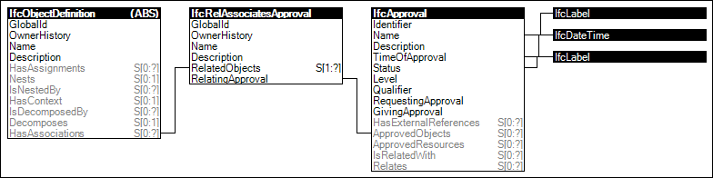

Link to this page
Link to this pageThe concept Object Approval describes how object or object types can have associated approvals indicating who is required to approve the data, the status of whether it has been approved, and the date/time of such approval. Approvals may require multiple parties fulfilling various roles.
Figure 17 illustrates an instance diagram.
 |
Figure 17 — Object Approval |